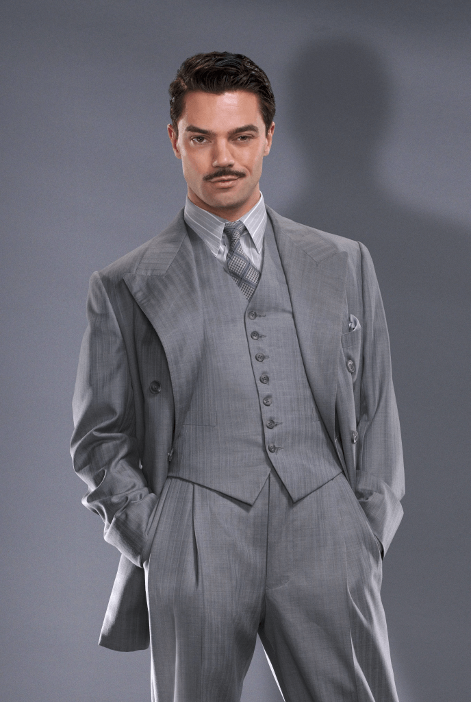

Башня Старка является главным офисом компании Старк Индастриз...
Руководители
Тони Старк ♰
 (1).jpg)
Энтони Эдвард «Тони» Старк — гений, миллиардер, плейбой и филантроп, а также бывший глава «Старк Индастриз». Однажды был похищен бандой "Десять колец". Для того, чтобы сбежать создал экзоскелет, при этом уменьшив ядерный реактор. Вернувшись домой, Тони стал супергероем по имени Железный человек.
Говард Старк ♰
Говард Энтони Уолтер Старк — ученый, гениальный изобретатель и бизнесмен. Был ведущим инженером организации Стратегический научный резерв, основал «Старк Индастриз», участвовал в создании Щ.И.Т.а.
Вирджиния Поттс
Вирджиния "Пеппер" Поттс — генеральный директор компании Stark Industries. Изначально она работала персональной ассистенткой Тони Старка, выполняла все его просьбы и задания.
Башня, ранее известная как Башня Старка и Башня Мстителей, представляет собой высотный комплекс
зданий,расположенный в Манхэттене, штат Нью-Йорк. Построенная Тони Старком, башня питалась от дугового
реактора,который позволяет ей работать более года. Первые десять этажей изначально были посвящены
исследованиям и разработкам.
После распада Щ.И.Т.а Старк сделал башню главной штаб-квартирой Мстителей.
Однако после наступления Альтрона, Старк переоборудовал старый склад "Старк Индастриз" на севере штата
в новую базу,
которую Мстители использовали в качестве своей основной базы, в то время как башня Мстителей была
перепрофилирована для использования Старк Индастриз.